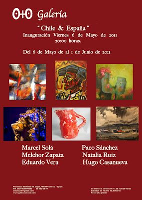

"Chile & España":Exposición del 6 de Mayo al 1 de Junio de 2011
lunes, 25 de abril de 2011
{kind=link}

“CHILE & ESPAÑA"
Del 6 de mayo al 1 de junio de 2011
Inauguración 6 de mayo a las 20:00 horas
La Galería O+O de Valencia cumple cuatro años y lo quiere celebrar con su nueva exposición: “CHILE & ESPAÑA“, compuesta por pinturas, esculturas y fotografías de seis artistas. En su 4º Aniversario, O+O vuelve a apostar por el intercambio cultural, en este caso Chile es el país elegido para tejer una relación artística con España. La representación chilena la forman los artistas Eduardo Vera Lastra, Hugo Casanuevas y Marcel Solá. Completan la muestra los españoles Natalia Ruiz, Melchor Zapata y Paco Sánchez. La abstracción chilena cargada de color viene de la mano de los artistas Vera Lastra y Marcel Solá; mientras que el paisaje de Chile nos lo ofrece el gran acuarelista Hugo Casanuevas con sus pinturas diluidas. Natalia Ruiz trae a esta exposición sus cerámicas realizadas a mano y decoradas con elementos florales. Melchor Zapata nos impacta con sus óleos cargados de fuerza y color. El duende español viene de la mano de los retratos fotográficos flamencos en blanco y negro de Paco Sánchez.
Eduardo Vera Lastra ha participado en un gran número de exposiciones y proyectos artísticos en países como Japón, China, Vietnam, Corea del Sur, España, República Checa, Argentina, Estados Unidos y, por supuesto, en su Chile natal. Ahora llega a Valencia de la mano de O+O con varios de sus nuevos trabajos. El pincel de Vera Lastra busca la complicidad emocional con el espectador. Una conexión inconsciente llena de fuerza y positivismo que se produce al observar la obra. Para ello utiliza un vocabulario emocional de factura vibrante y compulsiva, donde el color es el principal protagonista. Los colores, que se mezclan en un torbellino de degradaciones, matices, impulsos y tensiones; crean espacios organizados por tonalidades y texturas. Una gama cromática que realiza un seductor viaje de volúmenes y líneas hacia las emociones y sentimientos del subconsciente. Atmósferas sugerentes que desde una abstracción dinámica evocan elementos y formas liberadas de nuestro interior.
El destacado pintor chileno Hugo Casanuevas Ulloa reúne para esta exposición varios de sus paisajes de colores diluidos al agua; para mostrarnos una de sus mayores pasiones: la acuarela. En ellas rescata los rincones escondidos que pasan desapercibidos ante nuestros ojos y los ennoblece con su gesto sintetizador. Un trabajo que condensa la esencia del lugar, una imagen simple y llena de magia que en ocasiones se presenta solitaria y en otras lo hace repleta de gente. Manchas llenas de luminosidad que se transforman en rocas, olas del mar, ramas, horizontes, cielos, canales… siempre bajo una suave y delicada pincelada. Pinturas llenas de vivacidad y frescura que nos hablan de la inquietud del artista por la Naturaleza. Las pinturas de Casanuevas son el mejor ejemplo para observar la belleza y dificultad de la acuarela, donde las pinceladas de color se vuelven transparentes y el fondo del soporte cobra protagonismo.Su pintura es valorada como de las más representativas de la pintura chilena.
El artista Marcel Solá (Marcelo Soto), nacido en Chile (1976), es Licenciado en Artes y Estética, Diplomado en Gestión Cultural, Estudios de Conservación y Master en Museología. Combina su trabajo artístico con la gestión cultural y la museología. Sus estudios y exposiciones se han centrado principalmente en Chile y España. Realiza pinturas que no solo nos hablan a través del colorido y abstracción, también guardan un código de texturas formado por ralladuras, raspados y desgastes inscritos en el soporte. Composiciones pictóricas a base de la superposición de colores, donde las diferentes capas de pintura dejan entrever partes del soporte o de capas anteriores, creando una superficie atrayente. A estas manchas de fuertes colores les acompañan líneas y surcos aislados, que en ocasiones forman símbolos cercanos a esbozos figurativos. También descubrimos letras y números que parecen haber sido salpicados por el estallido del color de la obra. Formas, direcciones, tonalidades… se atraen y rechazan en una lucha de fuerzas llena de ritmo y color.
La artista catalana Natalia Ruiz (1977, Tordera) con una veintena de exposiciones realizadas a sus espaldas presenta una obra fresca, colorida y alegre. Su trabajo artístico se fundamenta en la pintura y aunque también realiza cerámica y diseña joyas, siempre se inspiran en su obra pictórica. Influenciada por el post-impresionismo, el fauvismo y el expresionismo alemán, realiza evocaciones a la Naturaleza salvaje. Su admiración y contemplación del medio natural le lleva a crear un mundo de manchas de color que forman un mundo de jardines y bosques en libertad. Este mundo de imaginario florido es el que aparece en sus pinturas y cerámicas. Las piezas de cerámica son creadas artesanalmente a mano y sin torno; para luego ser decoradas con colores vivos que detallan su particular concepción de la Naturaleza. Una obra que nos invita a soñar y experimentar un sentimiento de libertad, gracias a su juego de color espontáneo, lúdico y táctil.
El pintor y escultor Melchor Zapata (1946, Sevilla) ha realizado más de 250 exposiciones individuales en galerías de Madrid, Barcelona, Sevilla, Valencia, Lérida, Vitoria, Castellón, Granada, Salamanca, Vigo, Marbella, Tokio, Nueva York, París, Miami, Oporto, entre otras. Sus pinturas se muestran contundentes y cargadas de fuerza. Son composiciones llenas de temperamento que se caracterizan por ser ricas en materia, de intenso color y gran monumentalidad en las formas. Óleos que viajan entre el fauvismo y el expresionismo guardando una carga simbólica en su interior. Las tonalidades rojizas predominan en la paleta de Melchor Zapata. Y construyen, junto a otros tonos fuertes, piezas de vigorosa y empastada pincelada que singularizan las formas. Con un trazo suelto pero preciso, la intensidad del color y la riqueza de materia realiza paisajes, bodegones o retratos de una forma agresivamente bella. Una obra temperamental y llena de vigor que conjuga a la perfección ritmos compositivos con el barroquismo cromático.
Las fotografías de Paco Sánchez comparten su pasión por el flamenco con nosotros. La magia de congelar el momento y detener el tiempo, aliada con los primeros planos, el dramatismo y el banco y negro. Paco Sánchez muestra los retratos realizados a artistas del flamenco como Camarón, Antonio Mairena, Menese, Chocolate, Valderrama, Sordera, María Soleá, Fernanda de Utrera, Rafael Romero, La Perraca, Fosforito, Paco Cepero, El Mimbre, Oliver de Triana, La Niña de la Puebla, Paco de Lucía, Enrique Morente, Estrella Morente, Blanca del Rey, Aurora Vargas, Mario Maya, Remedios Amaya, Matilde Coral, El Cigala, Tomatito, Agujetas, entre otros. En las instantáneas se capta tanto al artista mostrando su arte (cantaores, bailaores y guitarristas) como en un momento de descanso o meditación. Un tributo a los artistas de hoy y ayer que han contribuido a escribir la Historia del Flamenco.
Paco Sánchez ha contribuido con sus larga trayectoria de trabajo, a fotografiar a los más grandes artistas del flamenco, como material gráfico, que es un verdadero documento histórico, para la historia del flamenco.
Óscar García García